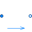

ThermodynamicStateMinimal variable set that is available as input argument to every medium function |
|
Used in Components (11)
|
Modelica.Fluid.Pipes.BaseClasses
Base class for distributed flow models |
|
|
Modelica.Fluid.Pipes.BaseClasses.FlowModels
Base class for momentum balances in flow models |
|
|
Modelica.Fluid.Machines.BaseClasses.PumpMonitoring
Interface for pump monitoring |
|
|
Modelica.Fluid.Fittings.GenericResistances
Flow model for generic resistance parameterized with the volume flow rate |
|
|
Modelica.Fluid.Fittings.BaseClasses.QuadraticTurbulent
Generic pressure drop component with constant turbulent loss factor data and without an icon |
|
|
BaseModelNonconstantCrossSectionArea Modelica.Fluid.Fittings.BaseClasses.QuadraticTurbulent
Generic pressure drop component with constant turbulent loss factor data and without an icon, for non-constant cross section area |
|
|
Modelica.Fluid.Sources
Boundary source component |
|
|  |
Modelica.Fluid.Interfaces
Partial element transporting fluid between two ports without storage of mass or energy |
|
Modelica.Fluid.Interfaces
Common interface for heat transfer models |
|
|
Modelica.Fluid.Interfaces
Base flow model for pressure loss functions with the same area at port_a and at port_b |
|
|
Modelica.Media.Interfaces.PartialMedium
Base properties (p, d, T, h, u, R, MM and, if applicable, X and Xi) of a medium |
Extended by (1)
|
Modelica.Media.Interfaces.PartialMixtureMedium
Thermodynamic state variables |